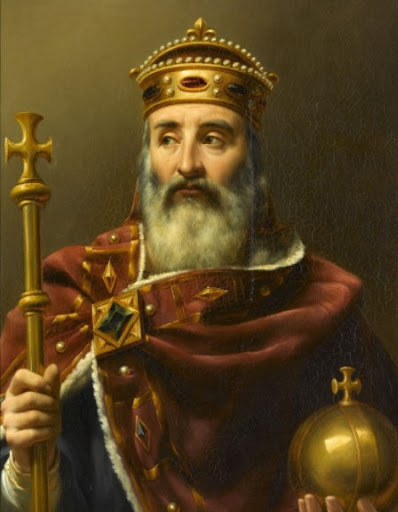

샤를 마르텔(Charles Martel)의 손자이자, 피핀 3세(Pepin le Bref)의 아들, 샤를은, 길고 끔찍한 전쟁들의 대가로 골 지역을 다시 통일했던 것에 대해 마그네(라틴어 Magnus : 위대한)라고 불렸다.
그가 색슨 족과 대항해 싸운 독일에서, 이탈리아에서(그는 774년에 롬바르드의 왕의 칭호를 얻었다) 그리고 스페인의 피레네와 에브로 지역 사이에서까지도.
롤랑 백작에 의해 지휘되는 후미부대가 전멸한 것은, 스페인 이슬람교도들에 대항한 전쟁에서 돌아올 때였다. 3세기 후 작곡된, ‘롤랑의 노래’는 이 보잘것없는 패배를 장엄한 서사시로 바꿨다.
